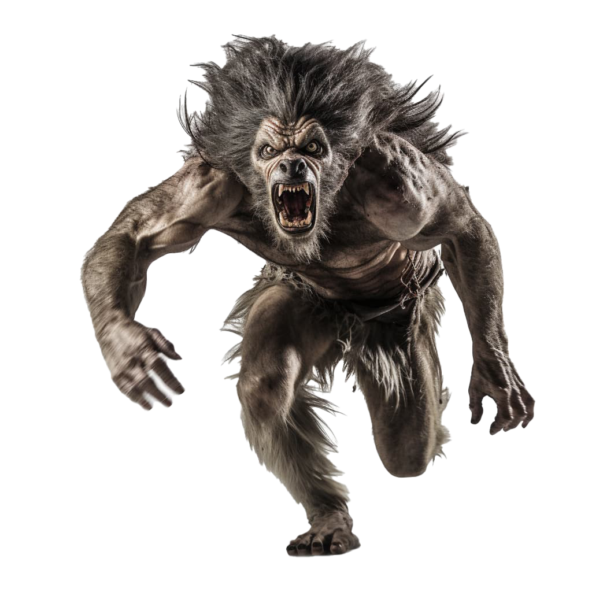
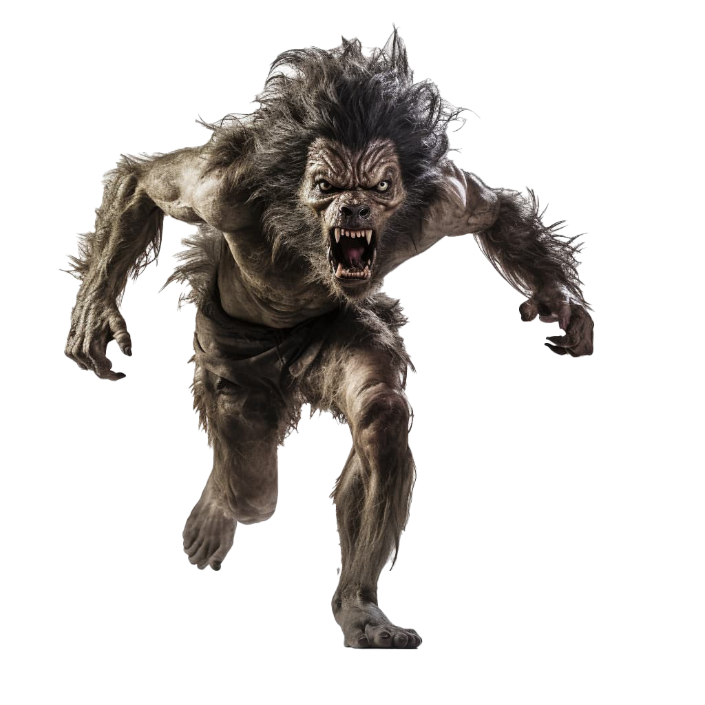

Alfie
If you are looking for companion, Alfie is the one to sit by. You'll
have to keep your distance so he doesn't tear you apart. But his
emotional range exceeds that of many humans.

Ben
Ben is getting older but you wouldn't be able to tell by his daily
acitivty. He loves to play with round objects, throwing and chasing
after them for hours. When he finally gets tired, a bucket of blood
disappears in that hungry guy in a blink of an eye.

Punto
Punto has been with our foundation for a few years. He can get a
little grumpy, but a roasted leg will always win him over. Get behind
him and takle this big fella. He'll put up a fight, but once you start
scratching behind his ears, he is yours.

Chico
One of our kindset werewolfs, loves bellyrubs and human flesh. He can
be a little shy, mostly hiding in the shadows of his cave. But when he
comes out, the entire office comes to play with him.